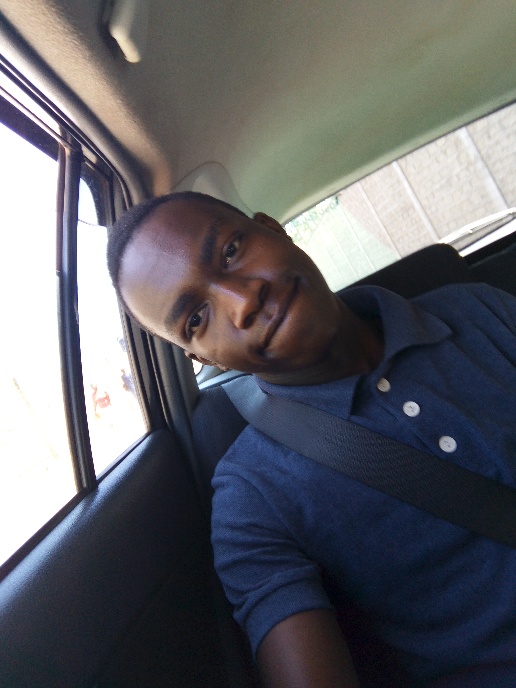

My name is Mark Murimi and am a web designer currently at Moringa School where i acquired my coding skills.
I come from Syokimau where i reside with my parents and my small brother a family of four.
I like a doing a number of things. Below is a list of things/hobbies i like:
Web designing and coding.
Watching movies.
Swimming.
Reading novels.
And most of all hanging out with friends.
Ever since high school i have had a great interest in coding and web designing. I have a vision that i would like to accomplish of becoming a software developer and that i will design a software that will bring about change in a global scale.
Below is a photo of me.

I've worked on another project here and there and below is what it is about.